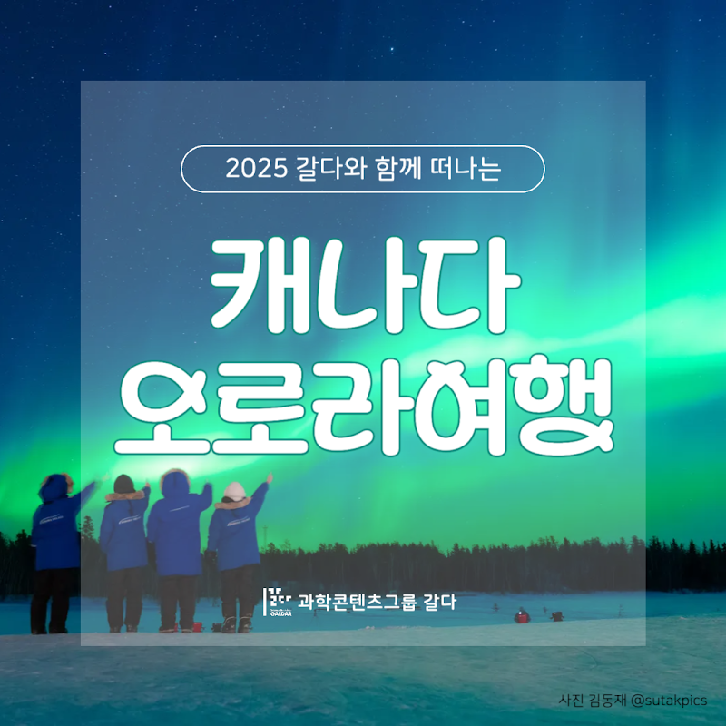
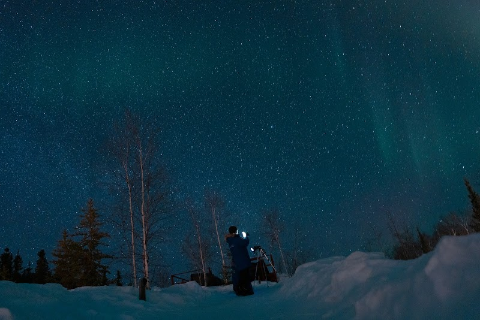
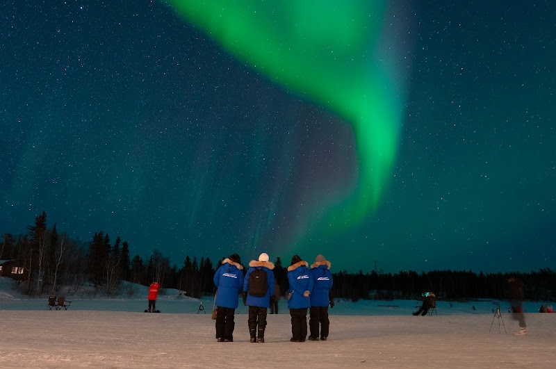
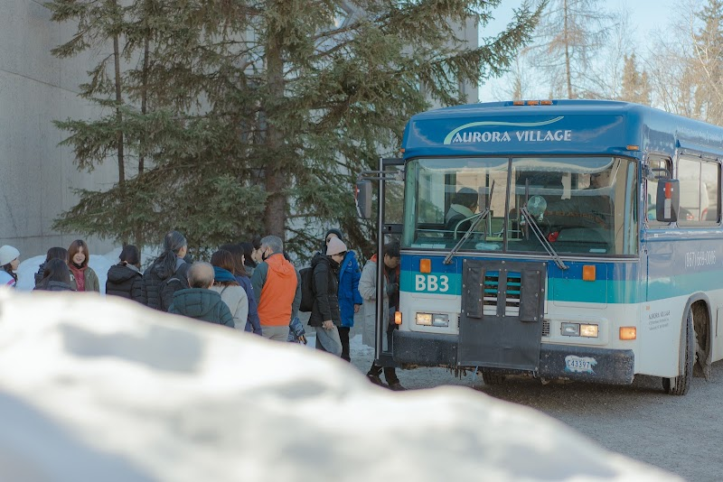
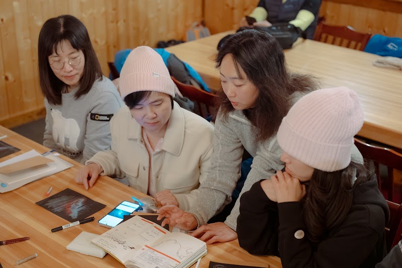
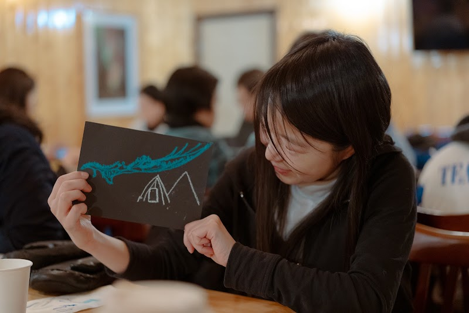
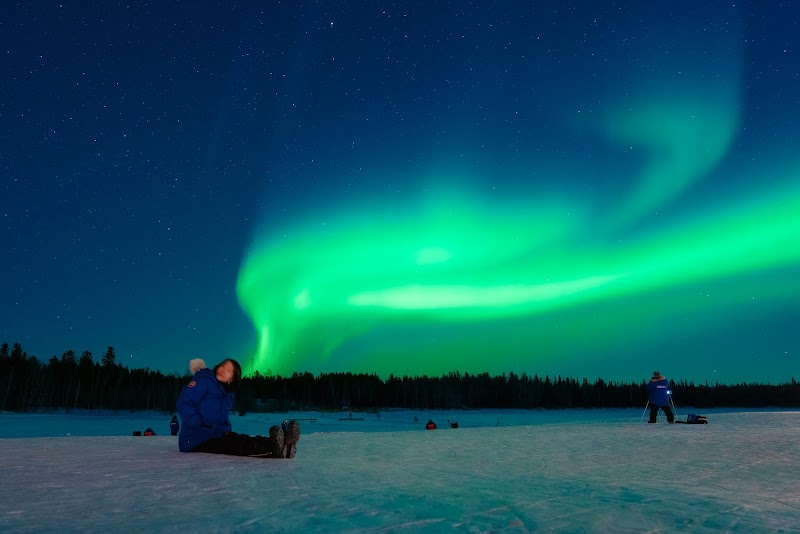
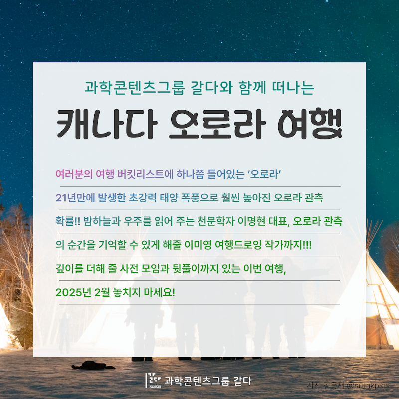
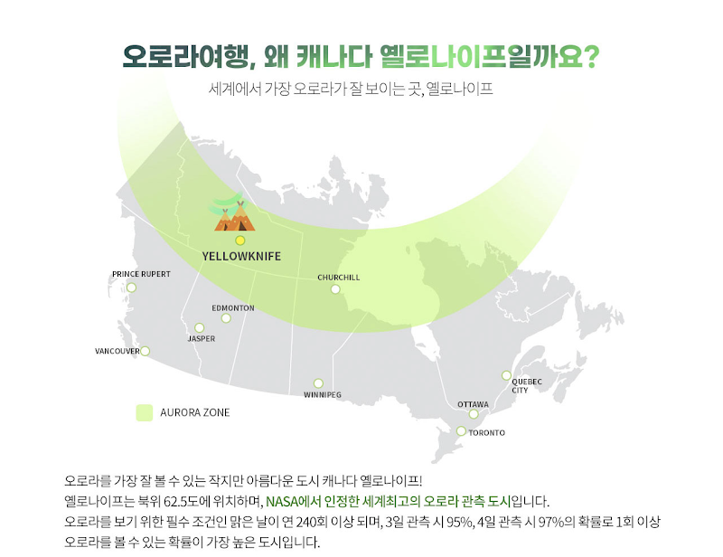
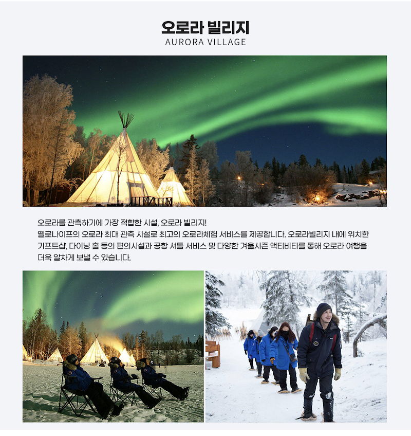

여행 소개
평생에 한 번은 오로라! 21년만에 발생한 초강력 태양폭풍, 지금이 떠날 때!
- 천문학자 이명현과 드로잉작가 어슬렁과 함께하는 오로라 관측 여행
항공료 미포함, 예약 후 개별 발권 진행








프로그램 상세 안내
< 마감안내 > 과학책방 갈다와 함께 하는 2025 캐나다 오로라여행 신청이 마감되었습니다.
감사합니다
여러분의 여행 버킷리스트에 하나쯤 들어있는 ‘오로라’
21년만에 발생한 초강력 태양폭풍, 지금이 바로 오로라를 보러 떠날 타이밍!
천문학자 이명현과 드로잉작가 어슬렁과 함께 해요!
밤하늘 전체를 물들이는 일렁이는 빛의 향연, 오로라.
여러분의 여행 버킷리스트가 있다면 하나쯤은 차지하고 있겠죠. 물론 여행사의 상품으로 결제를 한다면 그리 어렵지 않게 갈 수 있을 겁니다. 하지만, 그 오로라 여행을 과학을 사랑하는 사람들이 모여있는 ‘과학책방 갈다’와 함께 간다면??
21년만에 발생한 초강력 태양 폭풍으로 훨씬 높아진 오로라 관측 확률!! 밤하늘과 우주를 읽어 주는 천문학자 이명현 대표, 오로라 관측의 순간을 기억할 수 있게 해줄 이미영 여행드로잉 작가까지!!! 2025년 2월, 놓치지 마세요!!!
오로라를 기다리는 느슨한 마음
과학책방 갈다와 함께하는 오로라 여행은 조금 느린 여행입니다. 해야 할 일이 너무 많지도 않고, 여행 일정이 빡빡하지도 않습니다. 대신 거대한 자연현상을 마주하며 인간의 하찮음을 깨닫고 인생을 성찰할 수 있는 시간을 제공합니다. 자연현상을 즐길 마음가짐을 가진 사람들이 모여 있는 과학책방 갈다와 함께 자연과 스스로의 내면을 관찰하는 기회를 가져보세요.거기에 더해 천문학자에게 오로라와 밤하늘에 대한 천문학 강의를 통해 보는 것에 깊이감을 더하고, 여행드로잉 작가에게 여행과 천문현상을 기록하는 또 하나의 방법을 배울 수 있습니다.
과학책방 갈다와 함께 하는 2025 캐나다 오로라여행 포인트
✔️ 이명현 천문학자와 함께하는 오로라 깊이 있게 보기
✔️ 이미영 여행 드로잉 작가에게 배우는 여행과 천문현상을 기록하는 방법
✔️ 오로라여행에 대한 정보를 얻을 수 있는 '사전모임'과 과학책방 갈다에서의 '뒷풀이'


| 오로라 4박 6일 여행 일정 안내
2025.02.01(토) 사전모임(온/오프라인)
13:00 삼청동 과학책방 갈다
- '오로라 깊이 보기' 천문학자 이명현
- 참가자간 인사, 여행일정 및 유의사항 안내
2025.02.17.(월)
16:55 인천국제공항 출발
16:29 옐로나이프 공항 도착 후 호텔 이동/체크인
21:00 오로라 빌리지 이동(호텔 앞 픽업)
- 오로라 빌리지 서비스: 오로라 관찰 체험, 야식(스프와 빵, 음료) 제공
01:30 호텔 도착 후 휴식
2025.02.18.(화)
11:00 드로잉강연+워크숍
14:00 옐로나이프 시내관광
- 차안에서 즐기는 관광: 다운타운 및 올드타운 소개
- 차에서 내려서 즐기는 관광: 노스웨스트 테리토리 주정부청사, Prince of Wales박물관, 로컬Gift Shop 방문
16:00 호텔 귀환
21:00 오로라 빌리지 이동(호텔 앞 픽업)
01:30 호텔 도착 후 휴식
2025.02.19.(수)
오전 자유시간
12:30 겨울철 액티비티(호텔 앞 픽업)
- 개썰매 체험, 스노우 슈잉 체험(자작나무로 만들어진 스노우 슈를 신고 숲속을 산책합니다)
17:00 호텔 귀환
21:00 오로라 빌리지 이동(호텔 앞 픽업)
01:30 호텔 도착 후 휴식
2025.02.20.(목)
오전 자유시간
네트워킹(석식 제공)
21:00 오로라 빌리지 이동(호텔 앞 픽업)
01:30 호텔 도착 후 휴식
2025.02.21.(금)
03:00 기상 후 호텔 체크아웃
03:30 옐로나이프 공항 도착
05:15 옐로나이프 공항 출발
2025.02.22.(토)
15:15 인천국제 공항 도착
2025.03월 중 뒷풀이 모임(삼청동 과학책방 갈다)
※ 상기 일정은 현지 날씨, 기후, 도로 등의 사정에 따라 변경될 수 있습니다.
오로라여행 4박 6일 여행비 포함사항 안내
포함사항
- 옐로나이프 4성급 호텔 4박(2인 1실 기준)
- 오로라 빌리지 4일 뷰잉
- 이명현 천문학자의 미니 강연
- 이미영 드로잉작가의 드로잉워크숍
- 전 일정 차량 픽업 서비스(공항-호텔/호텔-오로라빌리지)
- 시내관광투어
- 겨울철 액티비티(개썰매&스노우슈잉 체험)
- 방한복 및 방한화, 장갑 대여
- 옐로우나이프 다운타운 저녁식사 1회
- 야식 2회(컵라면 또는 빵과 스프)
- 사전모임과 '과학책방 갈다'에서의 뒷풀이
여행비 불포함 사항
- 왕복 항공료 및 택스
- 일정 외 추가 액티비티
- 호텔 조식 및 전 일정 식사
- 기타 개인 지출 경비
- 현지 식당 및 호텔 봉사자 매너 팁(현지 식당 및 호텔 이용 시 매너 팁이며, 필수 사항은 아닙니다.)
- 캐나다 eTA: 한국 여권을 소지한 한국인이 캐나다를 방문하거나 캐나다에서 환승을 하는 경우 eTA가 요구됩니다. 항공편으로 캐나다에 입국하는 한국인들은 반드시 입국허가 신청을 받아야 합니다. 여행 계획 시에 미리 승인 받는 것을 권해 드리며, 최소 2주전에는 전자 여행 허가 승인 신청을 꼭 하시기 바랍니다.
- 여행자보험
* 항공료 금액은 약 2,000,000원으로 예약 시점에 따라 금액 변동의 가능성이 있습니다. 항공권의 잔여석에 따라 가격 변동이 되므로, 빠른 발권 진행을 부탁드립니다.
** 항공권은 예약 후 실시간 개별 발권 안내 진행됩니다. 최저가 항공권은 예약 후 24시간 이내 발권을 해야합니다.
개별 준비물
- 세면도구 및 개인용품 : 캐나다호텔에서는 샴푸, 비누 외 세면도구와 슬리퍼 등이 구비되어 있지 않습니다. 개인적으로 준비하시기 바랍니다.
- 상비약 : 평소 복용하시는 약, 이외에 소화제, 두통약, 생리용품 등을 챙겨주세요.
- 전압 : 캐나다에서는 110V를 사용합니다.
취소 및 환불 약관
- 여행개시 25일전(~1월 24일)까지 통보시 : 취소 수수료 10만원/1인
- 항공료는 발권 후 취소 및 변경 시, 항공사 규정의 패널티가 적용되며, 여행사의 발권/환불 대행 수수료 1인 기준 5만원이 별도 발생합니다.
- 여행 전체 취소 시 패널티가 적용되며, 예약금 입금 이후 여행 취소 및 항공권 환불 수수료에 대해서는 고객에게 별도 취소 규정을 안내드립니다.
2025 캐나다 오로라여행 기타 안내사항
Q. 예약 프로세스가 어떻게 되나요?
A. 과학책방 갈다 홈페이지를 통해 참여자의 정보를 포함한 여행 신청서(구글폼)를 제출해주세요. 여행사에서 항공권 발권 및 여행자 정보 확인을 위해 개별 연락을 드립니다. 항공권 발권과 함께 예약금을 입금해주세요. 여행 잔금을 납부 한 뒤, 출발 1주~2주 전 예약 확인서를 전달드리며 출발일정에 대해 안내드립니다.
Q. 여행에 참여하면, 오로라는 무조건 보게 되나요?
A. 오로라는 자연현상에 속합니다. 일정 정도의 데이터 검증을 통해서 높은 확률이 되는 곳을 선택한 일정을 준비했지만, 100%관측을 보장하는 것은 아닙니다. 다만, 오로라 관측성공률은 (지난 20년의 데이터를 기준으로) 옐로나이프 3일 정도 체류시 95%정도의 관측 성공률, 4일 체류시 97%정도의 성공률을 보여줍니다.
Q. 이번 기회에 오로라를 좀 더 보거나, 일정을 연장해서 다른 지역을 여행하고 싶어요
A. 우선 오로라 관찰 기간을 좀 더 여유있게 준비하신다면 일찍 출발하여 옐로나이프에서 합류 하시는 것을 권장 드립니다(출발 전 사전예약 시, 1박 28만원(2인1실기준) 추가). 별도 문의 주시면 일정에 맞는 항공권과 숙소를 안내 드리도록 하겠습니다. 기본 일정 후 추가적인 일정을 원하신 경우 개별적인 니즈는 여행사 지역담당자와 상의를 해주시면 합리적인 일정과 가격을 안내 받으실 수 있습니다.
Q. 여권과 비자 발권은 어떻게 준비하면 되나요?
A. 여권 유효기간은 출발 및 입국 기준 6개월 이상 유효해야 하며, 여권 서명란에 반드시 자필서명이 되어 있어야 합니다. 1회 사용한 단수여권은 재사용이 불가능하므로, 반드시 재발급 받으시기 바랍니다. 그리고 캐나다 여행 시, 사전에 캐나다 전자 여행 허가 승인(eTA)을 꼭 받으셔야 합니다. 입국심사는 입국심사관의 고유권한이므로 당사가 책임지지 않습니다.
Q. 1인실 혹은 3인실을 이용할 수 있나요?
A. 네, 1인실(추가비용 발생)또는 3,4인실을 원하실 경우 문의사항에 남겨주시면 상세 금액을 안내해 드리겠습니다.
Q. 본 프로그램의 참여 연령 제한이 있나요?
A. 아니오, 참여 연령의 제한은 없습니다. 12세 미만, 어린이 요금은 상품에 따라 성인 요금의 50~80%로 상이하므로 별도 문의 바랍니다. 보호자 동반 없이 미성년자만 본 프로그램에 참여하는 것은 불가능합니다.
Q. 개인적으로 항공권을 발권하고 여행프로그램에 참여할 수 있나요?
A. 네, 가능합니다. 그렇지만 비행기표를 직접 예약하신 분들은 여행도중, 현장에서 비행기의 연착이나 지연, 돌발 상황이 벌어질때 여행사에서 예약을 관리해드릴 수 없는 점 숙지바랍니다. 신청자 본인이 직접 항공사와 컨택해서 변경이나 환불, 재발행을 하셔야 합니다. (준 극권 지역이라서 갑작스런 한파 또는 비행편의 Mecanical Problems이 발생하는 경우 여행사에서 예약한 예약만 확인이 가능하므로, 개인적으로 진행하신 예약에 대해서는 여행사에서 변경을 요청할 수 있는 권한이 없으며 책임을 질 수 없습니다.)
본 여행의 콘텐츠는 과학문화콘텐츠를 큐레이션하고 제안하는 과학콘텐츠그룹 갈다가,
여행 전반에 대한 준비와 지원은 테마여행 전문 여행사인 파로스 여행사가 함께 합니다.